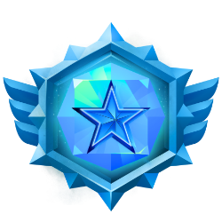

Para Mestres
Nessa página falaremos sobre algumas regras para vocês mestres, funcionamento de algumas coisas no servidor e outras coisas que podem sanar suas dúvidas. Pedimos que tenham conhecimento de como é o cenário do mundo, as principais cidades, os reinos, os deuses no geral, NPCs importantes e etc.
Como ser Mestre
Para iniciarmos sua estadia como mestre no servidor Novastris é necessário ter um personagem no Rank Prata, ter lido os livros Dungeon Master's Guide - Livro do Mestre e o Player's Handbook - Livro Do Jogador e que converse com o ADM e Mestre Veigar abrindo um Ticket no canal Quero ser Mestre no servidor Discord.
Após isso um LoreMaster ou um Moderador acompanhará você em todo o processo. Você deverá narrar uma quantidade de mesas entre 3 a 5 dependendo de seu feedback. Cada missão deverá acontecer no período de 10 a 15 dias dependendo da disponibilidade de seu LoreMaster ou Moderador e da sua. Ao final de todas as missões, você receberá a avaliação se foi aprovado ou não.
Se aprovado receberá o cargo de Mestre e poderá realizar missões dentro das regras detalhadas logo mais.
Ranks de Mestres
Mestre Aprendiz: É aquele mestre em processo de aprendizagem no servidor. Esse mestre primeiro aprenderá como tudo funcionará, quais são as regras impostas pelo servidor antes de se tornar um mestre oficialmente. Após narrar as mesas de avaliações e ser aprovado por um LoreMaster ou Moderador você ganhará o cargo de Mestre.
Mestre: Após adquirir esse cargo você irá adquirir alguns benefícios e poderá narrar missões de itens, iniciativas, lores para outros players, utilizar o canal Jornal para postagens de noticias recorrentes no mundo (que deverá haver uma verificar do LoreMaster ou da Administração). Para se tornar um Mestre Ancião é necessário ter narrado 20 missões e montar o que chamamos de sagas. Para qualquer dúvida acerca das sagas converse com um membro da Staff.
Mestre Ancião: O Mestre Ancião é aquele que pode realizar auxiliar em eventos, narrar missões de Sagas e criar NPCs para nosso mundo (Para se criar um NPC oficial da Guilda deve ser aberto um ticket com a aprovação da Staff). Para se tornar um Grão Mestre Ancião é necessário concluir uma Saga e auxiliar em um evento.
Grão Mestre Ancião: O cargo de Grão Mestre Ancião é fornecido para aqueles mestres em que mais confiamos. Este mestre poderá criar cidades, destrui-las, adicionar deuses no mundo e remove-los de seu posto, entre muitas outras coisas (Com permissão da Staff) e narrar missões de Ascensões.
Regra de Prioridade de Vagas
Para garantir que todos os jogadores possam desfrutar das missões no servidor, a regra de prioridade foi estabelecida. Mestres devem seguir o modelo abaixo para distribuir suas vagas:
Rank da missão postada —> Quem jogou menos na semana —> Dia da ultima missão do jogador —> Se o jogador já jogou no dia.
Caso todas as possibilidades sejam iguais para dois jogadores, quem fez o pedido da missão primeiro ficará com a vaga.
- A regra de "quem jogou menos na semana" reseta toda segunda feira 00:01.
- Jogadores de até um Rank acima ou abaixo da missão postada podem se inscrever após o fechamento das vagas. O mestre pode recusar o pedido de vaga para balanceamento da mesa. Qualquer um que se inscreva antes do fechamento das vagas, não tenha a ficha aprovada ou atualizada terminar a inscrição invalidada (Para o Rank bronze pode ser um Rank acima).
- O limite máximo de players para cada mesa é de 6.
- Se por algum motivo uma mesa for pausada e precisar continuar uma outra data, o tempo máximo para continuação dessa mesa tem que ser dentro do período de uma semana (7 dias). Os personagens utilizados nessa missão (caso o player desejasse continuar) não poderão participar de nenhum outro tipo de mesa. Além disso a data da última missão jogada passa a ser no dia em que a mesa finaliza, não que começa.
- Caso realize uma missão Bronze e não tenha o ideal número de jogadores, ainda é possível você liberar vagas para o Rank acima (Prata) . Caso isso aconteça, os jogadores de Rank acima receberão o valor em dinheiro do Rank Prioritário da missão (Bronze). Se a missão for de um Rank maior (Ouro) o mestre pode desejar se abre para um Rank inferior ou superior, mas as regras para a recompensa ainda são as mesmas. Caso o mestre queira narrar para 2 Ranks diferentes (Ouro e Prata), ele deverá escolher se a missão é da dificuldade do Rank mais baixo (CrossOver) ou do Rank mais alto (OverPower). Todos os integrantes receberão recompensas do Rank específico (exceto em missões de Arena).
Ranks e Recompensas para Mestres
A cada semana, um rank será escolhido aleatoriamente. Caso vocês mestres narrem para esse Rank, ganharão alguns benefícios e também ganharão recompensas por mais e mais missões que narrarem. Os Ranks disponíveis seriam:
- Bronze
- Prata
- Ouro
- Esmeralda
- Rubi

- Diamante 
- Cosmico (Ascendido)
Caso narre a missão para o Rank semanal escolhido, receberá +1 recompensa de EXP e de Ouro a mais por missão narrada. (O ouro é equivalente ao Rank de seu personagem.)
Caso um mestre narre 4 missões em 1 mês (Verificada e autorizada por um Gestor de Fichas), ele receberá 3x Tokens Expeciais podendo ser utilizados em quaisquer um de seus personagens.
Caso um mestre narre 8 missões em 1 mês (Verificada e autorizada por um Gestor de Fichas), ele receberá descontos em itens mágicos. 25% para itens incomuns maiores, 20% para itens raros maiores e 10% para itens muito raros maiores. (O valor de desconto é na raridade do item, não no total).
Caso um mestre narre 12 missões em 1 mês (Verificada e autorizada por um Gestor de Fichas), ele receberá 1 Nitro Boost podendo ser utilizado em qualquer um de seus personagens.
Regras do Servidor
As regras a seguir deverão ser seguidas por todos os jogadores e mestres nas mesas aqui no servidor:
- Magias sempre traduzidas (Nome não é necessário)
- Flanco +2
- Regra de Cobertura - Aliados não fornecem cobertura.
- Beber uma poção ou fazer alguém beber é uma ação. A mesma regra inclui pergaminhos a menos que o item diga o contrário.
- Familiares, Simulacros e Invocações usam a iniciativa do PJ.
- Se um oponente não tem chances para acertos em sua CA, somente um crítico pode acertá-lo. O mesmo serve para testes de perícias e testes de resistências.
- Não utilizar de Meta Game
- Atrasos serão tolerados até no máximo de 15 minutos sem aviso prévio, após isso o jogador entra em baixa prioridade e perde a vaga.
- A inspiração é compartilhada entre mesas então o mestre deve constatar isso na recompensa da missão
- Não existe limite de d6s para dano de queda (+1d6 extra a cada 10ft) e o personagem cai 300fts por turno. 10fts = 1d6, 20fts = 2d6+1d6, 30fts = 3d6+2d6+1d6.
- Se o jogador sair da missão antes do horário previsto pelo mestre na duração da mesa o jogador recebe a recompensa até a hora de sua saída, porém o ouro é desconsiderado e o personagem sai da missão. (Saídas sem motivos plausíveis são passivos de advertência).
- Não é permitido realizar um agarrão em um ataque de oportunidade.
- Os personagens não poderão usar mais de um item magico repetido. Ainda é possível possuir vários itens iguais, mas só será possível usar um e se beneficiar dos seus bônus e efeitos por missão (Essa regra não se aplica para consumíveis).
Uso de Apps para Narração
Para narração de nossos mestres no servidor Novastris utilizamos o Roll20 ou Owlbear Rodeo (a escolha do mestre). Porém o padrão e mais comum, seria o Roll20. Caso utilize o Owlbear é necessário informar isso na postagem da missão para os jogadores terem ciência. Pedimos aos mestres que narrem pelo menos 2 missões por mês. Caso isso não ocorra, o direito de narração será removido do mestre e ele poderá obtê-lo novamente após uma conversa com a Staff do servidor. Lembrando que isso é um servidor de estilo de guilda com algumas modificações, então há regras para serem seguidas aconteça o que acontecer e esperamos boas condutas dos mestres para fornecerem o exemplo a todos.
Tipos de Missões
Em nosso servidor temos uma grande variedade de tipos de missões diferentes. As mais comuns claro, são aquelas missões típicas que conhecemos (Matar um Dragão, Salvar uma vila e eliminar um Titã louco). Porém, abaixo pooderá saber um pouco mais sobre as outras opções:
Caso participe de uma mesa e queira saber mais sobre um item, uma divindade, ir atrás de um inimigo que fugiu ou realizar uma tarefa que está pensando com seu personagem, você deverá realizar uma Missão de Iniciativa. Nesse tipo de de missão você requisita a missão para o Mestre da última mesa (caso seja algo da mesa dele) ou para qualquer outro mestre (caso seja algo que seu personagem desejar descobrir em um evento, saga ou lore).
Nos níveis 5, 10, 14 e 20, você desbloqueia as Missões de Itens, cada uma representando a raridade do item. Esse tipo de missão pode ser requisitada para um mestre narrar. Você não escolhe a equipe que vai com você como na Missão de Iniciativa, porém ao final da mesa (caso sobreviva e conclua o objetivo da missão), você obtêm o item desejado.
Esse tipo de missão, é uma missão para um classe específica. Ao invés do mestre escolher um Rank, ele escolhe uma classe como Mago e somente quem tem um cargo de Mago pode se inscrever em tal missão. Porém, esse modo é liberado somente para um mestre de Rank Ancião ou Grão Mestre Ancião.
Essas aventuras podem ser aplicadas somente em grupos (Com mínimo de 3 jogadores) e é recomendada somente em eventos.
Essas missões são feitas exclusivamente por texto, permitindo que você participe no seu ritmo. A duração máxima de cada missão dessas é de 10 dias, garantindo que todos possam contribuir sem pressa. O mestre conduzirá a história em fases, e combates poderão ser narrados ou resolvidos via chamada de voz, caso o grupo prefira mais dinamismo.
üíé Recompensas Fixas
- Experiência: 300 EXPs por jogador ao final da missão.
- Recompensas: Cada jogador receberá 3 recompensas correspondente ao seu Rank atual, além de possíveis bônus narrativos!
- É possível utilizar Token Especial e Nitro nessas missões.
üìå Como se inscrever e onde Participar?
- Para se inscrever deverá apenas seguir do mesmo jeito das outras missões no canal Peça sua Vaga.
- As missões serão realizadas nos canais de RP existentes, com tópicos ou canais exclusivos criados para facilitar a organização. Em caso de locais secretos, inóspitos etc, que outros jogadores não conhecem, o mestre deverá realizar um tópico no canal Missões de RP.
Missões de lore são aventuras personalizadas focadas na história e no desenvolvimento do seu personagem. Elas permitem que você explore mais a fundo os antecedentes, motivações e objetivos dele dentro do universo do servidor. Diferentemente das missões comuns, que geralmente envolvem objetivos coletivos e desafios variados, as missões de lore são projetadas para destacar e expandir a narrativa pessoal de um personagem específico, concedendo maior desenvolvimento do personagem e com uma narrativa mais imersiva.
O jogador da missão de lore pode escolher a equipe que mais se encaixa com o contexto do personagem para participar junto dele. O personagem da missão, deverá combinar com antecedência com o mestre a data da missão e a equipe. Caso o jogador não escolha uma equipe, ele poderá participar da missão sozinho ou abrir vagas para outros personagens participarem.
OBS: Mestres não são obrigados a aceitar uma missão de Lore, Item ou Iniciativa.
Para saberem como funcionam as Missões de Ascensões e o funcionamento das Dádivas, clique no link a seguir:
https://docs.google.com/document/d/15IxaGrPQ4ad1lUYDibQekKmqNObfZtySJuoXseDSTa8/edit?tab=t.0
Criando e Finalizando uma Missão
Primeiramente, antes de criar e postar uma missão, é necessário verificar se há uma quantidade de jogadores disponíveis para o Rank que deseja narrar. Você poderá fazer isso marcando eles em seu canal de mestre quando o receber. É necessário ter ao menos 3 jogadores em uma missão. Após a postagem e a inscrição dos jogadores, você seguirá a Regra de Prioridade de Vagas para convocá-los e em seguida começara a mesa.
Quando ela finalizar, você realizará a Recompensa da Missão de acordo com as horas e o Rank narrados e escolherá um de seus personagens para ganhar recompensas também (A recompensa é para o nível atual do seu personagem, não para o da missão narrada). Caso o mestre não escolha um personagem, ele poderá ganhar recompensas de qualquer personagem que tenha participado da mesa.